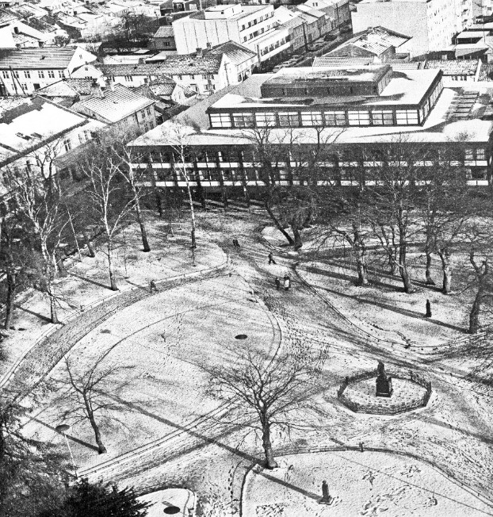
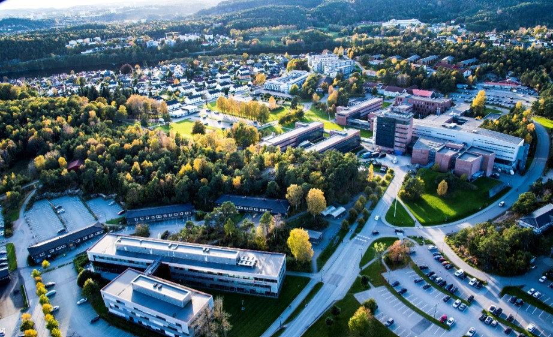

Arild Sæther, Doctor Philos., Professor Emeritus Agder Vitenskapsakademi, Kristiansand
Foredrag holdt på Handelshøyskolen ved Universitetet i Agder 1. oktober 2021 i anledningen av et 50 års jubileum for studenter fra den økonomisk administrative studieretningen og studieretningen for skipsfartsfag. Foredraget ble også holdt på Senioruniversitetet, Kristiansand 07.04.2022.
Etableringen av Agder distriktshøgskole og det økonomisk administrative studiet i 1969 og
utviklingen fram mot det som i dag er Handelshøgskolen ved Universitetet i Agder blir som
oftest fremstilt som en rosenrød fortelling. Stortingsrepresentantene fra de to Agder-fylkene
sto sammen med fylkes- og kommunepolitikerne og de ansatte på de ulike institusjonene,
avdelingene og fakultetene og kjempet fram den gode sak.
Denne framstillingen legger vekt på å få fram historiske fakta og omtaler dokumenter
og aktører som var viktig for utviklingen, samtidig som jeg også vil nevne noen av
vanskelighetene og uenighetene som oppsto på den noe tornefulle veien.
Problemene startet allerede ved etableringen av de første distriktshøgskolene hvor
forslaget om å etablere slike høgskoler i Molde, Stavanger og Kristiansand, ble forsøkt
torpedert.
Motstanden mot sammenslåingen til Høgskolen i Agder var stor på flere av de
institusjonene som ble med i prosessen. Motstanden internt ved Agder distriktshøgskole var i
flere faggrupper både sterk og usaklig.
Da spørsmålet om å etablere en Handelshøyskole ved Høgskolen i Agder og senere
ved Universitetet i Agder kom opp, var motstanden som ble reist internt fra de ulike
faggruppene og toppledelsen så massiv at den lykkes med å utsette og nesten torpedere dette
for landsdelen viktige prosjekt.
Den økonomiske politikken som ble ført i Norge på 1950- og 1960 tallet var preget av en
planøkonomi med statlig styring og regulering av nærings- og samfunnsliv. Målet var at store
investeringer i nåtid skulle gi stor økonomisk vekst i framtid. Det førte imidlertid til at
investeringene gav lav avkastning og kun en gjennomsnittlig vekst sammenliknet med våre
naboland og OECD landene. Dette medførte at Norge hadde svak vekst i privat og offentlig
forbruk.
Resultatet var blant annet at utbyggingen av høyskoler og universiteter lå etter mange
land i Vest Europa og Nord Amerika. Denne politikken førte til at tusener av norske studenter
var tvunget til å søke utdanning i utlandet. Det var for eksempel flere norske
siviløkonomstudenter i Tyskland enn ved Norges Handelshøyskole. Samtidig var det en
økende forståelse for at utdanning og forskning var en viktig faktor for økonomisk vekst og
utvikling. Dette ledet etter hvert til et press på myndighetene fra både næringsliv og politisk
hold om å øke utdanningskapasiteten..
Som et resultat av dette oppnevnte den fjerde Einar Gerhardsen regjeringen i 1965 den såkalte
Videreutdanningskomiteen med mandat til å utrede organiseringen og utbyggingen av høyere
utdanning i Norge. Deriblant også behovet for en utdanning for artianere som kunne være et
alternativ til mer langvarige universitetsstudier. Komiteens formann var direktøren for
Samskipnaden ved Universitetet i Oslo, den kjente motstandsmannen fra andre verdenskrig
Kristian Ottosen. Ottosen sto sentralt i utredningene og gav disse den nødvendige tyngde.
Komiteen fikk følgende mandat: 1. Foreslå tiltak som kan føre til best mulig utnytting
av studietid og studiekapasitet ved universiteter og høgskoler. 2. Vurdere muligheten for
videre avlastning av universiteter og høgskoler med hensyn på elementær undervisning. 3.
Utrede behovet og formene for utdanning for artianere som kan være et alternativ til mer
langvarige studier ved universiteter og høgskoler. 4. Utrede behovet på lengre sikt for
universitets- og høgskolekapasitet, også utover den det er naturlig å bygge opp i Oslo, Bergen,
Trondheim og Tromsø, og å komme med forslag til lokalisering av eventuelle nye
institusjoner. I denne sammenheng må også de kapasitetsbehov som springer ut av
lærestedenes ansvar for etterutdanning vurderes.
I årene 1966-1970 avla komiteen, under Per Borten regjeringen, med Kjell Bondevik
som Kirke- og undervisningsminister, i alt fem delinnstillinger (Kirke- og undervisnings-
departementet 1966; 1967; 1968; 1969; 1970). Innstillingene fikk stor betydning for den
videre organiseringen og utbygging av høyere utdanning. Det er rimelig å hevde at komiteen
gjennom disse innstillingene la grunnlaget for et moderne masseutdanningssystem for høyere
utdanning i Norge. Innstillingene har hatt sterk innflytelse på utviklingen av høyere utdanning
helt fram til i dag.
I den første delinnstillingen anslo komiteen at Norge ville få behov for en
studiekapasitet på omtrent 90.000 studieplasser mot slutten av 1980-tallet. Dette innebar en
tredobling i løpet av en 20-årsperiode, og var utvilsomt et dristig anslag, som likevel viste seg
å treffe meget godt. Komiteen fastslo at Norge hadde en forholdsvis lav studietilbøyelighet i
forhold til våre naboland, og de fleste andre OECD-land, og at det var nødvendig med en
ekspansjon.
I sin tredje innstilling som ble framlagt i mars 1968 utformer så komiteen planene om
etablering av distriktshøgskoler. Statsråd Bondevik forsto raskt betydningen av denne ideen,
bl.a. for å kunne kanalisere universitetskomiteene i flere byer inn i et spor som var lettere å
akseptere for de etablerte universitetene og de statlige sentrale myndigheter. Ottosen-
komiteen fikk beskjed om å legge alt annet til side og konsentrere seg om distriktshøgskole-
ideen.
Målet for distriktshøgskolene var å tilby et reelt alternativ til studier ved universitetene
og de vitenskapelige høgskoler. De skulle gi kortere og direkte yrkesrettet opplæring. For
forskningens vedkommende skulle den supplere grunnforskningen ved å gi den et anvendt og
regionalt sikte. Det primære var å få etablert et system der institusjonene kunne fungere i
sammenheng, med flyt av studenter og personell mellom dem, og med felles utvikling av
kompetanse. Den 20.06 1969 ble Stortingsproposisjon nr.136 1968-69 Om prøvedrift med
distriktshøgskolar, populært kalt «Ottosen-komiteen», som la grunnlaget for opprettelsen av
distriktshøgskolene, vedtatt av Stortinget.
Distriktshøgskolene skulle være desentraliserte utdanningsinstitusjoner som skulle
tilby ulike typer utdanning på høgskole- og universitetsnivå, ofte i kombinasjon med andre
studier. Studiene skulle som oftest være to eller tre årlige. Stortinget vedtok prøvedrift i
Molde, Stavanger og Kristiansand. Stikkordet prøvedrift var i det hele tatt et «sesam, sesam»
som ga mulighet til litt av hvert, uten å være bundet av byråkratiske tradisjoner, og knapt nok
av reglementer og generelle stortingsvedtak!
Kirke- og undervisningsdepartementet med ekspedisjonssjef Enevald Skadsem fulgte
opp i raskt tempo. Til å lede departementets arbeid med utviklingen av distriktshøgskolene ble
Seksjon for distriktshøgskolene opprettet allerede i 1968 med Cand. Jur. Ingjald Ørbech
Sørheim som dynamisk leder. Sørheim hadde vært sekretær for Ottosen-komiteen.
Det viktigste, sett fra departementet var at distriktshøgskolene oppfylte forutsetningen
om at hovedaktiviteten skulle være kortvarige yrkesrettede studier på høgt nivå.
Sentralutvalget for distriktshøgskolene, ledet av direktøren for Veritas, Egil Abrahamsen,
hjalp til med å få det hele inn i de rette spor. Cand. Jur. Magne Lerheim, som var en sterk
politiker og direktør for Universitetet i Bergen, forsto distriktshøgskolenes viktige regionale
rolle i utviklingen av deres egne distrikter og uttrykte støtte til prosessen.
Videreutdanningskomiteen med direktør Ottosen i spissen, var overbevist om at
distriktshøgskolene også ville bidra til en sunnere utvikling ved universitetene. Kollegiet ved
Universitetet i Bergen sluttet seg til komiteens «gjennomgripende nytenkning» og var enig i at
det hastet å komme i gang med forsøksvirksomhet. Norges Handelshøyskole, som drev en
omfattende kursvirksomhet innen økonomisk administrative fag, hadde fra første stund vært
positiv. Også universitetenes rektormøte uttalte seg positivt og understreket at
distriktshøgskolene i første rekke kunne tilby alternativer til universitets-utdannelsen. Men
motstanden blant de faglig ansatte og studentene ved universitetene var stor.
Forslagene fra komiteen ble imidlertid av mange oppfattet å være radikale, og utfordrende for
de tradisjonelle eliteuniversitetene. Motstanden blant de faglig ansatte og studentene, særlig
ved Universitetet i Oslo var stor. Dermed skaper Ottosen-komiteen storm blant først og fremst
den politiske venstresiden, og det er blitt hevdet at denne stormen overgikk motstanden og
protestene mot Vietnamkrigen.
Komiteens innstillinger ble ikke godt mottatt på den politiske venstresiden.
Arbeidernes Kommunistparti AKP Marxist Leninistene, med studentorganisasjonen
Sosialistisk Ungdomsforbund SUF (m-l) og den radikale kretsen rundt Pax forlag ledet
kampen. Representanter for denne venstresiden hevdet at så og si alle forslagene fra Ottosen-
komiteen ville tjene den imperialistiske monopolkapitalen. Hvorfor korte, yrkesrettede studier
på distriktshøgskolene skulle være en større trussel mot Mao i Kina en studiene på
handelshøyskolen og universitetene er vanskelig å forstå.
På den andre siden sto ledende Arbeiderpartipolitikere som Ingjald Ørbech Sørheim
og Einar Førde som hevdet at revolusjonen krevde dyktige økonomer, ingeniører, agronomer,
datafolk, ikke bare kunsthistorikere og kritiske filosofer.
Det skal heller ikke underslåes at det blant det akademiske personell ved
universitetene, på tvers av det politiske spektre, var mange som så med stor skepsis på denne
nye institusjonen. Professor Trygve Haavelmo ved Universitetet i Oslo sa det slik: «Hvem vil
la seg operere av en kirurg med to års utdannelse.» De var også redde for at den akademiske
frihet skulle bli truet av denne gjøkungen.
Motstanden var stor, debatten kokte, det ble brukt sterke ord som for eksempel at
«Ottosen skulle slaktes og stekes på spidd», men distrikthøgskolene var nødvendige for å
møte eksplosjonen i studentmassen, og etter hvert stilnet motstanden.
Opprinnelig ønsket statsråd Kjell Bondevik å etablere to distriktshøgskoler, en i Molde og en i
Stavanger. Da dette ble kjent skjedde noe, som ikke så ofte har funnet sted blant politikerne
og de administrative ansatte i kommunene og fylkene på Agder. De mobiliserte.
En omfattende lobbyvirksomhet fant sted med det formål å sikre at også en
distriktshøgskole ble lagt til Kristiansand. Kommune- og fylkespolitikerne gikk sammen med
Stortingsrepresentantene for disse fylkene og kjempet for at det også skulle legges en
distriktshøgskole i Kristiansand. Et forsøk på å torpedere denne virksomheten, med et
ordførerforslag om at i stedet for å legge en distriktshøgskole i Stavanger og en i Kristiansand,
så kunne det legges en i Lyngdal, lykkes heldigvis ikke. Resultatet ble at Departementet
endret sitt primære syn og Stortinget gjorde, som nevnt, 20. juni 1969 vedtak om å legge de
tre første distriktshøgskolene til Stavanger, Molde og Kristiansand.
Et hovedargument for også å legge en distriktshøgskole til Kristiansand med en
økonomisk administrativ studieretning var den virksomhet som allerede var etablert ved
Økonomisk College, Kristiansand Handelsgymnas, under ledelse av rektor Ewald Junker, og
ved Kristiansand Museum, under ledelse av rektor Halvor Vegard Hauge. Økonomisk
College drev postgymnasial kursvirksomhet i samarbeid med Norges Handelshøyskole, og
Kristiansand Museum hadde universitetsundervisning i fransk og matematikk.
I juli 1969 rykket en liten stab, som besto av kontoransatt Doris Tønnesen og
høgskolelektorene Thor Einar Hanisch og Andreas Vollan, under ledelse av direktør Halvor
Vegar Hauge, inn i en tom tredjeetasje på drøyt 1100 kvm i Norske folk-gården ved
Wergelands parken. Instruksen var klar: I samarbeid med kommunen, del inn og innred
etasjen med auditorier, et bibliotek og kontorer for fagpersonell og administrativt ansatte.
Studentopptak snarest råd. Oppstart 27. august. Fullmakt: Engasjer undervisningskrefter
utenfra for fag de nytilsatte høgskolelektorene ikke kan overkomme og få i gang en 2-årig
økonomisk-administrativ studieretning.
Agder distriktshøgskole ble høytidelig åpnet av statsråd Kjell Bondevik 27. august
1969 i Store auditorium. I sin hilsningstale fra Norges Handelshøyskole, NHH, uttrykte rektor
Dag Coward at «NHH hadde en sterk følelse av fadderskap for den spesielle økonomisk-
administrative undervisning, som skal være en av distriktshøgskolenes mange potensielle
aktiviteter, og som får æren av å være det første komplette studietilbud ved ADH».
Til å lede den økonomisk administrative studieretning var Cand. Oecon. Tormod
Hermansen ansatt som undervisningsleder. Da han ikke kunne tiltre før fra januar 1970 ble
høgskolelektor Thor Einar Hanisch konstituert og fikk sammen med høgskolelektor Andreas
Vollan det store ansvaret med å starte opp den faglige delen av det nye studiet.
Da Tormod Hermansen allerede sommeren 1970 ble ansatt på Universitetet i Bergen ble Arild Sæther tilsatt som undervisningsleder.
Thor Einar Hanisch forlot distriktshøgskolen våren 1972. Han ble i Statsråd utnevnt til byråsjef i Kirke og undervisningsdepartementet og tiltrådde seksjonen for distriktshøgskoler.
Han kom tilbake til Agder i 1980 som direktør for det regionale høgskolestyret.
Her er det viktig å understreke at den 2-årige økonomisk administrative
studieretningen fikk en sentral og sterk posisjon ved alle distriktshøgskolene. Fullført
eksamen fra studiet gav tittelen høgskolekandidat. Selv om dette var en helt ny tittel så tok
næringslivet godt imot de nye kandidatene. De hadde ingen problemer med å skaffe seg gode
stillinger hvor de kunne få brukt sin nye kompetanse. Det skal også understrekes at studiet
kunne kombineres med utdanning fra andre høyere utdanningsinstitusjoner og f.eks. inngå i
en cand. mag. -grad.

Agder distriktshøgskole - norske folk gården
Kirke- og undervisningsdepartementet oppnevnte styret for høgskolen. I styret hadde
representasjon fra næringslivet, fra departementet, fra politikerne i fylket og kommunene på
Agder. I Høgskolestyret var også de ansatte, både de administrative og de som underviste, og
studentene representert. Styret hadde myndighet til å ansette både administrativt og faglig
personell ved Høgskolen. Men det faglige personell hadde blitt vurdert og rangert av
kommisjoner for deres faglige kompetanse på samme måte som ved universitetene.
Høgskolen utarbeidet budsjettforslag som ble lagt fram for styret til godkjenning. Styret
godkjente det interne styringsorganet kalt Høgskoletinget som så hadde ansvaret for fordeling
av budsjettet internt.
Agder distriktshøgskole bygget allerede fra begynnelsen opp en styringsstruktur med
stor deltakelse av studentene. Etter hvert ble det flere to og treårige studieretninger og ettårige
fagstudier ved høgskolen. Hver studieretning eller studium var representert med en eller to
representanter valgt av de faglig ansatte og av studentene på studiet. Høgskolens
administrasjon hadde sine egne valgte representanter. Og studentene valgte også noen
representanter gjennom deres Studentforening. Totalt hadde studentene og personalet lik
representasjon. Dersom det var likhet i stemmetall hadde rektor, som var valgt blant de faglig
ansatte, dobbelt stemme.
Siden det store flertall av Høgskoletingets representanter, både de valgte
representantene fra studentene og de ansatte, var valgt på et bredt grunnlag oppsto det sjelden
eller aldri konflikter hvor alle studentene sto samlet mot det ansatte. Fraksjonsvirksomhet fra
enten studentene eller de faglig ansatte forekom ikke.
Denne modellen, som viste hvordan en styringsmodell med et stort innslag av student-
medbestemmelse kunne fungere, er nå ikke lenger i bruk. Imidlertid burde erfaringen fra
denne modellen bli tatt med når de nye modellene for medbestemmelse og studentdemokrati
blir diskutert.
I Kristiansand ble de første 52 studentene, alle unge menn, tatt opp på Den økonomisk
administrative studieretning i august 1969 og undervisningen startet umiddelbart etter
åpningen. Modellen for studiets faglige innhold var, som nevnt, det studieopplegget som
Norges Handelshøyskoles kursvirksomhet og Økonomisk College ved Kristiansands
Handelsgymnas hadde utviklet. Undervisningen i de obligatoriske fag startet umiddelbart etter
åpningen.
Det økonomisk administrative studiet var lagt opp som et 2-årig studium over 4
semestre. Første året hadde kun obligatoriske fag, fem to vekttalls kurs i hvert semester. I
andre årets første semester var der tre obligatoriske kurs og to valgkurs. I andre årets andre
semester var der valgkurs. Det ble raskt etablert spesialiseringer i regnskap, revisjon,
databehandling, offentlig administrasjon, internasjonalisering, u-landsfag,
samfunnsplanlegging, skipsfarts-økonomi og engelsk, for å nevne noen.
Det økonomisk administrative studiet ble derfor grunnstammen i oppbyggingen av
Agder Distriktshøgskole. På basis av flere av spesialiseringene ble det bygget opp nye et, to
og tre års studieretninger eller studier i en rekke fagområder: Databehandling, Fagoversetter
studiet, Offentlig administrasjon og økonomi, Skipsfartsøkonomi, Teknisk økonomisk
studium, U-landsstudiet, Matematikk, Kjemi, og Engelsk, for å nevne noen. Satsingen på det
økonomisk administrative studiet førte derved til en bred oppbygging av fagmiljøet ved
høgskolen.
De tre første distriktshøgskolene startet alle med et økonomisk administrativt studium
og alle bygget på omtrent den samme modellen. For å samordne studiene ble det arrangert
nasjonale koordineringsmøter. Disse ble arrangert av Seksjonen for distriktshøgskoler.
Møtene ble til å begynne med lagt til Norges Handelshøyskole hvor rektor Dag Coward, som
opprinnelig kom fra Kristiansand, var vert. Han tok på seg fadderskap for studiene og var
også en inspirator.
Det kan ikke være tvil om at både de ansatte og studentene, som i fellesskap bygget opp de
første studiene ved Agder distriktshøgskole må kalles pionerne. 2 De faglig og administrativt
ansatte, sammen med studentene møtte en stor utfordring. Studiet hadde en ramme, men ikke
noe fast opplegg. Vi kan trygt si at studiet ble til underveis. Det var stor mangel på konkrete
læreplaner. I mange fag måtte lærerne, ofte i samarbeid med studentene, utarbeide pensum.
Lærebøker manglet. Disse måtte ofte skaffes tilveie med at tidsskrifter ble gjennomlest og
artikler som egnet seg ble samlet i kompendier. Heldigvis var Norges Handelshøyskole og de
faglig ansatte der i overveiende grad positive til distriktshøgskolene. I flere kurs ble
undervisningen bygget på forelesningsnotater som lærerne der hadde stilt til disposisjon. Det
var også en fordel at flere av de faglig ansatte hadde hele eller deler av sin utdannelse fra
utlandet. Dette styrket både innholdet og bredden i undervisningen. En stor bruk av
kvalifiserte timelærere fra næringslivet i området styrket også kvaliteten og bruken av de fag
som ble undervist.
Uten studentenes positive holdning ville imidlertid arbeidet med å bygge opp det
økonomisk administrative studiet, og de første avleggerne av dette studiet blitt vanskelig. Det
er heller ikke tvil om at studentene følte seg som pionerer. Her bør nevnes at det i hovedsak
var studentene på det økonomisk administrative studiet, sammen med senere Professor Stein
Østre, som deltok aktivt i etableringen av de første studentaktivitetene ved distriktshøgskolen.
Her skal nevnes musikkorpset Spadser & Blæse – Ensembelet (Blæsen) som startet i 1974,
mannskoret Quantum Oellarus Op & Frem (Quantum) som ble etablert i 1975, og
kvinnekoret Lady Klukk, ADHs fremste kvinne som kom til i 1976. Disse aktivitetene er
fortsatt aktive og var også grunnlag for en rekke nye aktiviteter ved det som i dag er
Universitet i Agder.
Ottosen-komiteen hadde antydet at de faglig ansatte skulle kunne drive med faglig
utviklingsarbeid og forskning og at de skulle konsentrere sin forskning om lokale og regionale
problemstillinger. Dette ble tatt på alvor av de faglig ansatte ved høgskolen. Disse hadde også
blitt vurdert av kommisjoner bestående av professorer, dosenter og førstelektorer ved Norges
Handelshøyskole og våre universiteter, og de ble vurdert på samme måte som de faglig
ansatte ved disse institusjonene. De aller fleste av de faglig ansatte anså derfor at dette var en
del av deres arbeidsforpliktelser. Behovet for undervisningsmateriale og pensumlitteratur
medførte imidlertid at de i de første årene måtte prioritere utviklingen av slikt materiale. Men
faglig utviklingsarbeid og forskning ble også en oppgave, og det ble i stor grad satset på å ta
opp lokale problemstillinger. I de første årene kom det mange utredninger og publikasjoner.
På begynnelsen av 1980-tallet dukket ideen opp at det kunne være fornuftig å få den
utrednings- og forskningsvirksomheten inn fastere former. Men da forslaget kom fra det
regionale høgskolestyret møtte det motstand blant en gruppe ansatte ved distriktshøgskolen.
Imidlertid fikk rektor Harald Knudsen etablert Agderforskning som et kontor ved høgskolen,
med førstelektor Bernt Krohn Solvang som leder. Etter et par år la motstanden seg, og i 1983
ble Agderforskning etablert med virksomhet både i Kristiansand og Grimstad.
I 1985 ble Agderforskning omorganisert og etablert som en egen forskningsstiftelse
med Dr.ing. Ove Torbjørn Aanensen som direktør. Formålet med Agderforskning var å
formidle og koordinere forsknings- og utviklingsoppdrag innen ulike fagfelt, samt å knytte
kontakt mellom brukerne, dvs. næringsliv og kommunale og fylkeskommunale institusjoner.
Det ble nedlagt et betydelig arbeid hvor det ble samarbeidet med forskere ved andre regionale
forskningsinstitusjoner og med de øvrige universitetene og høgskolene.
1. oktober 2018 ble Agderforskning, Teknova AS, Christian Michelsen Research,
International Research Institute of Stavanger og Uni Research AS slått sammen til NORCE
Norwegian Research Centre AS.
Fagpersonalet ved det økonomisk administrative studiet tok tidlig kontakt med det maritime
miljøet på Sørlandet. Først ble en egen spesialisering i skipsfartsøkonomi innført og deretter
en egen studieretning. Samtidig arbeidet Kristiansand Navigasjonsskole, under ledelse av
rektor Reidar Ditlefsen, med videreutdanning for sine skipsoffiserer. Et samarbeid mellom
fagmiljøene og et integrert utdanningsopplegg for skipsoffiserer ble etablert ved Agder
distriktshøgskole i 1971. Studiet var en suksess og fikk god oppslutning.
I 1972 satte regjeringen ned et utvalg som skulle å utrede og vurdere behovet for
utdanning av personell for handelsflåten, og vurdere utdanningen av ulike kategorier sjøfolk
og annet personell, og legge fram forslag til læreplaner mv. Herunder også å vurdere behov og
lokaliseringer av nye institusjoner kalt maritime høgskoler. Rektor Ditlefsen ble et viktig
medlem av utvalget.
I april 1974 ble utredningen NOU 1974:31 Utdanning av dekks- og maskinpersonell
for handels- og fiskeflåten lagt fram. Modellen fra samarbeidet i Kristiansand var tydelig i
forslaget om forsøk med 2-årig og 3-årig maritime høgskoler. Utvalget skriver konkret: «Her
kan man bygge videre på de erfaringer som er gjort i samarbeidet mellom navigasjonsskolen i
Kristiansand og Agder distriktshøgskole». Utvalget foreslo forsøk med tre-fire slike
høgskoler.
Fagpersonalet ved Kristiansand Navigasjonsskolen og det økonomisk administrative
fagmiljøet ved Agder Distriktshøgskole regnet med som sikkert at en maritim høgskole ville
bli lagt til Kristiansand. En kunne da bygge på den erfaringen en hadde oppnådd og fortsette
det eksisterende samarbeid mot det som kunne bli Norges ledende maritime høgskole.
Styret for distriktshøgskolen og det regionale høgskolestyret, i sin uforstand, ville det
annerledes og anbefalte regjeringen å legge en slik skole til Arendal.
Stortinget vedtok i mai 1978 at det skulle legges maritime høgskoler til 7 steder, ikke
tre-fire som utvalget foreslo; Arendal, Bergen, Haugesund, Oslo, Tromsø, Trondheim,
Tønsberg. Agder maritime høgskole ble opprettet i Arendal 01.08 1983. Samarbeid mellom
Agder distriktshøgskole og Kristiansand navigasjonsskole ble lagt ned. Ingen ansatte i
Kristiansand fulgte med til Arendal. I ettertid er det utrolig å tenke på at det eneste miljøet
med erfaring, og som dertil er nevnt i utredningen ikke skulle inkluderes.
Dette vanskeliggjorde også arbeidet for de som ble satt til å bygge opp institusjonen i
Arendal. Et nytt studium ble bygget opp på en beundringsverdig måte, men så slo
skipsfartskrisen inn. Den førte til at de fleste maritime høgskolene ble nedlagt i løpet av 80-
årene. Agder maritime høgskole ble formelt innfusjonert med Agder ingeniør- og
distriktshøgskole i 1990. Den maritime utdanningen ble nedlagt.
Stor uforstand ledet til et tap for landsdelen.
På begynnelsen av 1970 tallet skjedde det en stor strukturendring hvor offentlige skoler som
lærerskoler, tekniske skoler, sykepleieskoler og andre ble omgjort til statlige høgskoler. Det
oppsto derved et behov for en koordinering av både nye, og det allerede eksisterende
utdanningstilbudet.
Stortinget bestemt i 1975 at all høyere utdanning i et fylke eller region, bortsett fra
universiteter og vitenskapelige høgskoler, skulle samles under ett regionalt høyskolestyre. St
meld nr. 17 (1974-75) Om den videre utbygging og organisering av høgre utdanning. I
samsvar med meldingen ble det etablert høgskolestyrer i 16 regioner. Arbeidsoppgavene til
styrene ble fastsatt i reglement ved kongelig resolusjon 20. februar 1976, og de regionale
høgskolestyrene var i arbeid fra våren 1976.
Høgskolestyrene hadde ansvar for planlegging og samordning av all høyere utdanning i
hver sin region. I begynnelsen hadde de forvaltningsansvar kun for distriktshøgskolene. Fra
høsten 1977 ble ansvaret utvidet til å omfatte også de pedagogiske høgskolene,
ingeniørhøgskolene og sosialhøgskolene. Når det gjaldt ingeniørhøgskolene, ble disse overtatt
av staten fra 1. januar 1977.
Høgskolestyrets virksomhet ble regulert gjennom et 10-punkts reglement utarbeidet av
Kirke- og undervisningsdepartementet. Blant de mest sentrale ansvarsområdene var:
Kontakt- og samarbeidsformidling mellom de ulike institusjoner og myndigheter. Vurdering og
rådgiving knyttet til behovet for ulike utdanningstilbud i regionen. Fordeling av budsjettmidler
til høgskolene, samt utarbeiding av budsjettforslag og langtidsbudsjetter. Fastsetting av rammer
for studentopptak. Koordinering av studietilbud, forskning, voksenopplæring, bruk av lokaler
etc. Godkjenning av interne styringsordninger ved høgskolene og tilsetting av personale ved de
regionale høgskolene.
Agder Høgskolestyre var sammensatt av ni representanter, alle oppnevnt av Kirke og
Utdannings Departementet. Fem representanter var foreslått av fylkestingene (på bakgrunn av
politisk tilhørighet). Disse var valgt for fire år. I tillegg var det to representanter for de ansatte
ved høgskolene og to studentrepresentanter. Disse var valgt for henholdsvis to og ett år.
Høgskolestyret hadde dessuten et sekretariat bestående av en direktør og en kontorfullmektig.
Det er ikke til å legge skjul på at det ved flere anledninger oppsto konflikter mellom
det regionale høgskolestyret og styrene ved høgskolene. Til tider toppet konflikten mellom
styret for Agder Distriktshøgskole og Det regionale styret seg.
Mot slutten av 1980-tallet hadde Norge om lag 200 institusjoner innenfor høyere utdanning,
medregnet private høyskoler. Dette høye tallet var ikke et resultat av en planlagt utbygging,
men av at utdanninger som tidligere lå på et lavere eller udefinert nivå, var blitt oppgradert til
høyskoler, samtidig som staten hadde overtatt institusjoner som tidligere hadde vært
fylkeskommunale eller private. Bare ti hadde over 1000 studenter og de fleste hadde mindre
enn 400.
Situasjonen var derfor preget av «et helt usedvanlig høyt antall læresteder, som dels
kiver med hverandre og som dels er seg selv nok». Allerede tjue år tidligere hadde Ottosen-
komiteen foreslått å samle postgymnasial utdanning i regionene i studiesentre, som skulle
inkludere en ny type utdanningsinstitusjoner, distriktshøyskolene. Komiteen anslo at en
normal størrelse på slike sentre burde være 1500 – 4000 studenter, med 500 studenter som et
minimum. Av ulike grunner ble forslaget ikke realisert, og etter hvert som lærerskoler,
tekniske og maritime skoler, kommunal- og sosialskoler og sykepleierskoler fra 1976 av fikk
endret status til høyskoler, ble de for en stor del værende som egne institusjoner. For å sikre
koordinering mellom institusjonene ble det i stedet etablert regionale høyskolestyrer.
Regjeringen oppnevnte 22.07.1987 et utvalg, kalt Gudmund Hernes-utvalget, med det
formål å utrede reformer innen høyere utdanning. Utvalget skulle foreslå «organisatoriske
løsninger for sammenslåing av institusjoner, eller former for samarbeid mellom institusjoner,
med sikte på mer rasjonell drift, bedre ressursutnyttelse, og ikke minst bedre forutsetninger
for faglig utvikling.» Målet med reformen, var at høgskolene skulle drives mer effektivt ved
hjelp av stordriftsfordeler. Utvalget lanserte tanken om sammenslåing og samlokalisering av
høgskolene. Lærerkrefter som tidligere ble brukt til administrative oppgaver skulle heller
settes til undervisning og forskning. Her skal legges til at en evaluering av reformen etter fem
år av Norsk institutt for forskning og utdanning slo fast at den ikke hadde lyktes med målene
og at den effektiviseringen som ble målt i stor grad kom som en følge av lavere statlige
bevilgninger og ikke av mer effektiv drift. Reformen gav, ikke uventet, faglærerne mer
administrativt arbeid.
Innstillingen fra Hernes utvalget, kalt Med viten og vilje (NOU1988:28), som ble gitt
09.09 1988, satte i gang en prosess i flere av regionene.
Kandidatene fra de økonomisk administrative studieretningene ved distriktshøgskolene ble
mottatt med åpne armer av næringslivet over hele landet. Kravet om videre utdanning
innenfor disse fagene kom både fra studentene og næringslivet. Norges Handelshøyskole
hadde tatt imot mange studenter fra distriktshøgskolene, og særlig fra Agder
distriktshøgskole, som søkte videreutdanning. Men kapasiteten på handelshøyskolen var også
begrenset.
På slutten av 1970-tallet ble det klart for Kirke- og Undervisningsdepartementet at det
var behov for å utvide den to-årlige økonomisk administrative studieretningen. Samtidig
hadde Norges Handelshøyskole ved rektor Olav Harald Jensen kommet med utsagn om at det
var nødvendig og ønskelig å etablere en alternativ siviløkonomutdanning i Norge. En
konferanse i Bodø hvor det deltok representanter fra næringslivet, offentlig forvaltning og de
institusjoner som gav økonomisk administrativ utdanning, konkluderte med at det var stort
behov for å utvide utdanningskapasiteten for siviløkonomer. Kirke- og
Utdanningsdepartementet satte ned en komite, ledet av daværende direktør for Telenor,
Tormod Hermansen, som hadde vært leder av den økonomisk administrative studieretningen
ved Agder distriktshøgskole våren 1970, til å utrede behovet. Komiteen, kalt Hermansen-
komiteen, anbefalte at Bedriftsøkonomisk Institutt skulle få siviløkonomutdanning, og at en
ny siviløkonomutdanning burde etableres og legges til Nord Norge. Begrunnelsen for å velge
Bodø var at den faglige progresjonen for de to siste årene var klart den beste. Så når den
faglige komite var klar i sin konklusjon, kunne heller ikke regjeringen endre på dette.
Stortinget vedtok 07.12 1982 å legge den til Bodø.
Agder distriktshøgskole hadde i flere år sendt kandidater fra det økonomisk
administrative studiet til Norges Handelshøyskole for videreutdanning. Disse kandidatene
hadde fått godskrevet de fag de hadde tatt eksamen i som deler av siviløkonomstudiet.
Institusjonen hadde derfor ønsket å få anledning til å gi full siviløkonom utdanning.
Fagmiljøet ved Agder distriktshøgskole var følgelig svært skuffet da det mente at det beste
tilbudet var i Kristiansand.
Hermansen-komiteen hadde imidlertid med i sin innstilling en positiv vurdering av å
utvikle de 2-årige økonomisk administrative studiene ved Høgskolen i Trøndelag og Agder
distriktshøgskole til 4-årige studier. Dette var Kirke- og undervisnings departementet imot da
de så at med 4-årige studier så var veien kort til godkjenning av siviløkonom tittelen.
Agder distriktshøgskoles daværende rektor Harald Knudsen startet, etter råd fra
Tormod Hermansen, umiddelbart arbeidet med å omdisponere egne ressurser slik at
høgskolen kunne bygge opp en 2-årig påbygging på studiet i økonomi og administrasjon.
Målet var å sørge for at landsdelen fikk et fullverdig siviløkonomstudium.
Detaljerte fagplaner med høyt faglig nivå ble utarbeidet. Norges Handelshøyskole
støttet dette arbeidet og godkjente nivået i fagplanene. Dette 4-årige (2+2) studiet kunne vi da
arbeide for å få godkjent som siviløkonom studium.
Ved å omdisponere egne ressurser lykkes derfor høgskolen med det å etablere to 2-
årige påbygninger i henholdsvis Prosjektadministrasjon og Internasjonalisering. Etter råd fra
studieleder Per Iversen, ble dette teknisk gjort ved å lansere disse som etterutdanning. Det var
da det regionale høgskolestyret, etter lov om etterutdanning som hadde ansvar for
godkjenning, og Departementet kunne derved ikke komme inn og si nei.
Det skal også nevnes at Institutt for økonomi trakk inn næringslivet i dette arbeidet.
Med Oil Industries Services, Statoil og Philips som støttespillere for studiet i
Prosjektadministrasjon og fire Kristiansands-banker i ryggen for studiet i Internasjonalisering.
Disse institusjonene støttet også påbygningene finansielt. Med denne støtten fra næringslivet
måtte også Det regionale høgskolestyret støtte og stille seg positiv til disse påbygningene.
Samtidig ble det etablert samarbeid ved et par amerikanske universiteter og høgskoler,
deriblant Monterey Institute of International Studies, slik at de som ble uteksaminert fra disse
påbygningene kunne studere videre og ta en Mastergrad der.
Det 4-årige studiet ble godkjent 1988 og høyskolen fikk bruke Siviløkonomtittelen fra
1992. Dette vakte stor glede blant politikerne og representanter for næringslivet i landsdelen,
men heller skepsis innad i høgskolemiljøet.
Regjeringen oppnevnte i 1990 et utvalg for å se nærmere på styringen av de regionale
høgskolene. Innstilling, St. meld. Nr. 40 (1990-91), Fra visjon til virke - Om høgre utdanning,
kalt høgskolereformen, ble behandlet av Stortinget 18.06 1991. Utvalget tok over
stafettpinnen fra utvalget som la fram innstillingen Med viten og vilje i 1988.
Utvalget foreslår felles lov for Universiteter og Høgskoler. Alle høgskoler på samme
sted skal slåes sammen og alle skal ha egne styrer. I tillegg ble en rekke kunstfagutdanninger
samlet i to kunsthøyskoler.
I Kongelig resolusjon av 7. mai 1993 (om de nye høgskolene fra 1. august 1994 står
det bl.a. «Stortinget har ved behandlingen av St.meld.nr.40 (1990-91) Fra visjon til virke -
Om høgre utdanning, jf. Innst.S.nr.230 (1990-91), sluttet seg til at de regionale høgskolene
skal organiseres som færre og større høgskolesentre innen et Norgesnett for høgre utdanning
og forskning. Ordningen med regionale høgskolestyrer felles for høgskolene i en region skal
avvikles, og høgskolesentrene vil få egne styrer. Stortinget hadde ved behandlingen av
budsjettet for 1993 ikke merknader til departementets planleggingsforutsetning om at alle
høgskoler innenfor samme by eller kommune skal organiseres innenfor rammen av én
institusjon, og godkjente at departementet kan avgjøre hvilke høgskoler som skal gå
sammen».
Målet med reformen, var at høgskolene skulle drives mer effektivt ved hjelp av
stordriftsfordeler. Høgskolereformen førte til at hvert fylke fikk hver sin høgskole, bortsett fra
Agderfylkene som deler en skole. Flere fylker har flere høgskoler, der Møre og Romsdal og
Nordland topper med tre hver.
Ordningen med regionale høgskolestyrer felles for høgskolene i en region skal
avvikles, og høgskolesentrene vil få egne styrer. Stortinget hadde ved behandlingen av
budsjettet for 1993 ikke merknader til departementets planleggingsforutsetning om at alle
høgskoler innenfor samme by eller kommune skal organiseres innenfor rammen av én
institusjon, og godkjente at departementet kan avgjøre hvilke høgskoler som skal slås
sammen.
Reformen var en prosess som førte til at 98 mindre statlige høgskoler, deriblant
distriktshøgskolene, med virkning fra 1. august 1994 ble sammenslått til 26 statlige høgskoler.
I de to Agderfylkene var det på begynnelsen av 1990-tallet følgende høgskoler: Agder
distriktshøgskole, Agder musikkonservatorium, Arendal sykepleiehøgskole, Agder ingeniør-
og distriktshøgskole AID, Kristiansand lærerhøgskole, Kristiansand sykepleiehøgskole og
Statens gartnerskole på Dømmesmoen, som ble innfusjonert i AID i 1991.
Det var fortsatt sterk motstand mot sammenslåing på flere av høgskolene i Agder, og
ved Agder distriktshøgskole var det til dels sterk motstand i flere miljøer. Dette førte til
handlingslammelse. Imidlertid ble det sendt et brev til rektorene ved høgskolene, det
regionale høgskolestyret, administratorene og politikerne i Agder høsten 1989. Her ble det
påpekt at i Rogaland arbeidet aktivt for å samlokalisere og innlemme de ulike høgskolene.
Dette var kanskje medvirkende til at miljøene kom ut av lammelsen.
Høgskolen i Agder ble etablert 1. august 1994 med campuser i Kristiansand og
Grimstad. Høgskolen ble organisert i avdelinger på tvers av de tidligere høgskolene. I årene
som fulgte ble det nedlagt et omfattende arbeid for å integrere både de administrative og de
faglige ansatte i den nye avdelingsstrukturen. Styrking av forskningen var vesentlig. Mange så
at etableringen av Høgskolen i Agder var et skritt på veien til full universitetsstatus.
I april 1998 oppnevnte Kirke-, utdannings- og forskningsdepartementet et utvalg, det såkalte
Mjøs-utvalget, etter formannen rektor ved Universitetet i Tromsø Ole Danbolt Mjøs. Utvalget
la fram sin innstilling 8. mai 2000. NOU 2000: 14 «Frihet med ansvar. Om høgre utdanning
og forskning i Norge»
Utvalget la grunnlaget for Kvalitetsreformen som blant annet innebar at gradene cand.
mag. og hovedfag, med titlene cand. mag. og cand. philol. / cand. Scient. mfl., ble erstattet av
bachelorgrad på 3 – 3 1/2 år og mastergrad på fem år. Det foreslo også å innføre bokstav-
karakterer etter det europeiske ECTS (European Credit Transfer and Accumulation System)
systemet. Endringene var begrunnet med behovet for å tilpasse norsk utdannelse til
utenlandske studiesystemer.
For universitetene og høyskolene førte Mjøs-utvalgets arbeid til at det ble innført en
ny finansieringsmodell. Utdanningsinstitusjoner fikk nå deler av de offentlige tilskuddene
knyttet opp imot produksjon av studiepoeng. Tanken bak dette var at universitetene og
høyskolene nå måtte konkurrere om å tiltrekke seg studenter, og samtidig følge opp
studentene bedre slik at de kom seg igjennom studiene.
Mjøs utvalget kom også med flere anbefalinger for forskning. De foreslo blant annet at
bevilgningene til grunnforskning skulle økes til et nivå som minst tilsvarte gjennomsnittlig
OECD standard i løpet av en femårsperiode.
En annen konsekvens av Mjøs-utvalgets innstilling var at det ble åpnet adgang for
høyskolene til å bli omgjort til universiteter. Utvalget laget prosedyrer for en slik overgangen
fra høgskole til universitet.
I 2003 ble det vedtatt at alle høgskoler som oppfylte visse krav, deriblant 4
doktorgradsutdanninger, fikk kalle seg universitet. Dette skjedde senere ved Norges
landbrukshøgskole, Høgskolen i Stavanger og Høgskolen i Agder.
Under daværende rektor Ernst Håkon Jahrs ledelse arbeidet Høgskolen i Agder systematisk
med å oppfylle disse kravene og i desember 2005 ble det søkt om universitets status.
Nasjonalt organ for kvalitet i utdanningen NOKUT gjennomførte deretter en sakkyndig
vurdering. Denne tok uvanlig lang tid men forelå med positivt resultat på nyåret 2007 .
På grunnlag av denne fattet styret i NOKUT 19. juni 2007 vedtak om at Høgskolen i
Agder tilfredsstiller kravene til akkreditering som universitet, slik disse var nedfelt i
kriteriene. Et hovedkriterium for universitetsstatus var at institusjonen har godkjent
forskerutdanning på minst fire områder. Allerede i 2005 hadde Høgskolen i Agder fått rett til
fem doktorgradsstudier: i nordisk språk og litteratur, matematikkdidaktikk, internasjonal
økonomi og ledelse, mobile kommunikasjonssystemer og i fagområdet religion, etikk og
samfunn.
Ved kongelig resolusjon av 10 august 2007, som byget på NOKUTs faglige
akkreditering, fikk
Høgskolen i Agder universitetsstatus fra 1. september 2007 og Norge fikk dermed sitt
syvende universitet.
Universitetet i Agder ble fra begynnelsen organisert på samme måte som Høgskolen i
Agder med 2 campuser, Kristiansand og Grimstad. Høgskolens avdelinger ble omgjort til
fakulteter: Fakultet for Helse og idrett, Fakultet for Humaniora og pedagogikk, Fakultet for
Kunstfag, Fakultet for Teknologi og Realfag, Fakultet for Økonomi og Samfunnsvitenskap og
en Avdeling for lærerutdanning.
Økonomistudiene var underlagt Institutt for økonomi ved Fakultet for Økonomi og
Samvitenskap. Institutt for økonomi var inndelt i faggrupper.
Etter at Agder distriktshøgskole fikk på plass 4-årige økonomisk administrative studier og
særlig etter at institusjonen fikk Siviløkonomitittelen i 1992 ble spørsmålet om å få adgang til
å få organisere seg som en «ordentlig» handelshøyskole mer levende. Dette var ønskelig for å
kunne rekruttere dyktige fag-personer og for å kunne trekke til seg mange dyktige studenter.
Fagmiljøet var også kjent med at andre høgskoler arbeidet sterkt og hadde kommet langt med
tilsvarende planer.
Ved Høgskolen i Agder var imidlertid motstanden mot en videre utbygging av
økonomistudiene stor. Til tross for at fagmiljøet hadde fått på plass 4-årige studier med
siviløkonom tittel uten nye ressurser fra høgskolens budsjett så tok ikke ledelsen ansvar for
studiet. Siviløkonom studiet var et stebarn.
En av grunnene til at en utbygging av økonomistudiene møtte så stor motstand var nok
at de fleste både i fagmiljøene og i høgskolens toppledelse syntes å ha vært totalt ukjent med
hvordan «professional schools» ble organisert på amerikanske og britiske universiteter. De var
i stor grad påvirket av den kontinentale tradisjonen med at handelshøyskoler og
ingeniørhøyskoler skulle være separate institusjoner. Leger og advokater, til og med
sosialøkonomer, kunne utdannes på universitetene, med vanlig fakultets organisering, mens
handelsøkonomer, bedriftsøkonomer og ingeniører måtte ha egne institusjoner. For Professor
Harald Knudsen, som var rektor 1980-84, og i mange år kjempet aktivt for oppbygging av
økonomistudiene, og svært mange av de andre fagøkonomene, som hadde hele eller deler av
sin utdannelse fra USA, var det en selvfølge at universitetene besto av både «professional
schools» og fakulteter. I USA finner vi for eksempel «law schools», «medical schools»,
«schools of architecture» og «schools of public administration» som en naturlig del av
universitetene.
Et utvalg, nedsatt ved høgskolen i 1997 og ledet av tidligere rektor ved Norges
Handelshøyskole Arne Kinserdal, slo for eksempel fast at den lave ressurstildelingen til de
økonomisk administrative studiene ved høgskolen var alvorlig. I flere år var de økonomisk
administrative studiene blitt tappet for ressurser. En grov beregning, som også ble gjengitt i en
artikkel i Fædrelandsvennen i august 1999, viste at sammenliknet med
siviløkonomutdanningen i Bodø, som i 1998 brukte kr. 28 000 per student, så brukte
Høgskolen i Agder kun kr. 14 000 per student på de økonomisk administrative studiene.
Gjennomsnittet for Høgskolen i Agder var kr. 28 000. Tallene for de øvrige avdelingene viser
hvor skjev den interne fordelingen var; humanistiske fag kr. 21 000, pedagogikk kr. 29 000,
realfag kr. 36 000, teknologi kr. 42 000, og kunst kr. 51 000.
Situasjonen var etter utvalgets mening så kritisk at det var nødvendig å mobilisere hele
høgskolen til en snuoperasjon. Det slo fast at høgskolens styre, rektor og direktør hadde et
ansvar for siviløkonomistudiets framtid. Alle måtte være med på å snu utviklingen og at dette
måtte munne ut i en økning i ressurstilgangen. Gjennomsnitts kostnaden per student for
økonomi studiene måtte bli lik med Siviløkonomistudiet i Bodø.
Saken ble deretter fremmet igjen og igjen, men det var liten støtte å få fra de andre
fagmiljøene ved høgskolen. Flere av disse var som tidligere nevnt helt fra starten blitt hjulpet
fram av det økonomisk administrative fagmiljøet, men følte ingen forpliktelse til å yte noe til
gjengjeld.
Motstanden var imidlertid så sterk at arbeidet ble konsentrert om å få adgang til å
bruke betegnelsen School of Management. Dette var nødvendig for å få internasjonal
annerkjennelse, akkreditering, som igjen var viktig for at våre studenter kunne studere videre
ved anerkjente høgskoler og universiteter i utlandet.
Fagmiljøet startet derfor arbeid med å finne støtte utenfor høgskolen. Et råd med
representanter for akademia, næringslivet og det politiske og administrative miljø på ble
etablert. På rådets første møte i november 2000 ble det gitt støtte til etablering av en
Handelshøyskole/ School of Management.
To år senere vedtok Høgskolestyret (S-sak 55/2002) at Avdelingen for økonomi og
samfunnsfag kunne på engelsk bruke navnet Agder University College, School og
Management.
I de neste årene arbeidet fagmiljøet med å få etablert en handelshøyskole basert på
enten hele Avdeling for økonomi og samfunnsfag eller ved å dele avdelingen. Imidlertid var
der ingen interesse for en handelshøyskole blant de andre avdelingene ved Høgskolen og
heller liten interesse blant de andre instituttene ved Avdelingen for økonomi og samfunnsfag.
Tvert imot var det til dels stor motstand. Argumentene fra Institutt for økonomi ble avfeid.
Det kommende universitetet skulle vare et tradisjonelt universitet med tradisjonelle
institusjoner og der var det ikke plass for noen handelshøyskole.
Et møte i Fakultetsstyret vinteren eller våren 2006 førte også til at betegnelsen School
of Management som eget navn i realiteten ikke lenger ble godkjent for bruk.
Da Høgskolen i Agder ble universitet i 2007 var planer for å etablere en Handelshøyskole
ikke på dagsordenen. Universitetets faglige og administrative ledelse var sterkt imot. «Et
ordentlig universitet hadde ingen handelshøyskole».
Motstanden var også stor blant flere av avdelingene som nå var blitt fakulteter.
Fakultetet for økonomi og samfunnsfag var splittet. Noen var tilhengere av den amerikanske
modellen med «Schools». Spesielt var det at flere statsvitere ikke ville ha noen
handelshøyskole. Økonomene var også lei av å sloss for det som kollegaene ved andre
universiteter fikk støtte og ros for. De orket vel heller ikke lenger å stange hodet i veggen.
Dette ledet til pasivitet.
Imidlertid kom hjelpen fra et seminar arrangert av foreningen Econa i oktober 2010.
Hva slags forening var Econa? Allerede i 1939 ble en forening kalt Siviløkonomforeningen
stiftet som en interesseforening for handelslærer kandidatene fra Norges Handelshøyskole,
som hadde blitt opprettet i 1938. Over mange år utviklet denne foreningen seg til å bli en
interesse- organisasjon for kandidater fra alle institusjoner i Norge som gav utdanning på
siviløkonom nivå innen økonomisk administrative fag.
I 2010 skiftet foreningen navn til Econa. I den forbindelse ble alle høgskolene i Norge
som gav 4-årige studier i økonomisk-administrative fag invitert til det nevnte seminar i Oslo.
Et av temaene for dette seminaret var organiseringen og innholdet av den økonomisk
administrative utdanningen i Norge.
På dette møtet kom det fram at fra 1. januar 2011 ville de økonomisk administrative
studiene være organisert som handelshøyskoler ved 7 institusjoner i Norge. 1. Norges
Handelshøyskole, 2. Handelshøgskolen ved Universitetet i Tromsø, 3. Handelshøgskolen ved
Universitetet i Nordland (Nord Universitet 2016), 4. Handelshøyskolen i Trondheim ved
Høgskolen i Sør-Trøndelag (Norges Teknisk Naturvitenskapelige Universitet fra 2015), 5.
Handelshøgskolen ved Universitetet for Miljø og Biovitenskap (Norges Miljø og
Biovitenskapelige Universitet fra 2014), 6. Handelshøyskolen BI og sist, men ikke minst 7.
Handelshøgskolen ved Universitetet i Stavanger. Ved Universitetet i Agder var planene for å
etablere en Handelshøyskole for lengst lagt til side.
Denne informasjonen ble tatt med til Universitetet i Agder. Informasjonen om hva som
hadde foregått ved andre universiteter og høgskoler i landet når det gjaldt etableringen av
handelshøyskoler ble nå en vekker for mange. Erkjennelsen av at linjen om et rent universitet,
uten noen handelshøyskole, var forfeilet var tung å svelge.
Men mange, og deriblant det faglige og administrative lederskap ved Universitetet i
Agder, ønsket nok ikke lenger å ta ansvaret for at økonomene og de studier de representerte
ikke lenger fikk organisere seg som en handelshøyskole, slik deres kolleger ved de andre
universitetene. Det kunne være tap av prestisje å bli det eneste universitetet i Norge uten en
Handelshøyskole.
Institutt for økonomi fremmet umiddelbart en sak overfor Fakultetet for økonomi og
samfunnsvitenskap. Fakultetet vedtok 09.11.2010 at Institutt for økonomi kunne benytte
Handelshøyskolen i Kristiansand ved Universitetet i Ager, som sidestilt navn på instituttet.
Deretter begynte arbeidet med å skille instituttet ut som et eget fakultet kalt
Handelshøyskolen. Etter sonderinger med fagmiljøene, og med mye fram og tilbake, ble
Institutt for økonomi skilt ut som Handelshøgskolen. Etter forslag fra Fakultetet for økonomi
og samfunnsfag og med støtte, om enn motvillig, fra universitetets administrative og faglige
ledelse, vedtok Universitetets styre i møte 11.09 2013 å dele fakultetet i to og å etablere
Handelshøyskolen ved Universitetet i Agder fra 1. januar 2014.

Handelshøyskolen (bygningen i forgrunnen) ved Universiteti Agder
Det akademiske personalet ved det som i dag er Handelshøyskolen ved Universitetet i Agder
har vektlagt internasjonal utdanning og forskning, og har i dag et stort internasjonalt nettverk
og et bredt spekter av internasjonalt samarbeid knyttet til forskning og undervisning.
Fakultetet har også et internasjonalt miljø med mange ulike nasjonaliteter både i fagmiljøene
og blant studentene. Tradisjonen fra Agder distriktshøgskoles arbeid helt fra 1970 tallet ble
derfor fulgt opp.
Handelshøyskolen har 4 institutter: 1. Institutt for økonomi, 2. Institutt for strategi og
ledelse, 3. Institutt for arbeidsliv og innovasjon og 4. Institutt for rettsvitenskap.
Handelshøyskolen har Bachelor, Master og Ph.d. studier innen de økonomisk
administrative fagene. I tillegg har den en Bachelor innen rettsvitenskap, og fikk i februar
2023 adgang til også å gi en Master i rettsvitenskap. I tillegg gis det en rekke
videreutdanningstilbud i økonomi og ledelsesfag.
Mye av forskningsaktiviteten er knyttet til sentre: 1. Senter for eiendomsanalyse, 2.
Senter for entreprenørskap, 3. Centre for Advanced Studies in Regional Innovation Strategies
og 4. Norwegian Centre for Micro Finance Research.
Handelshøyskolen ved Universitetet i Agder ble i 2019 akkreditert av den amerikanske
organisasjonen Association to Advance Collegiate Schools of Business, AACSB. Dette er en
organisasjon med om lag 840 akkrediterte medlemmer fra 54 land. Globalt sett tilbyr rundt
18 000 institusjoner en økonomisk utdanning på bachelornivå eller høyere. For å bli
akkreditert kreves det blant annet en grundig ekstern gjennomgang av handelshøyskolens
undervisning, forskning, finansiering, samarbeid med næringsliv og godkjente
doktorgradsprogrammer. I tillegg til en omfattende dokumentering av handelshøyskolens
aktiviteter, har det også vært to besøk fra AACSB for å forsikre seg om at ting er som
handelshøyskolen hevder. Handelshøyskolen har blitt grundig evaluert for å sikre kvalitet i
alle ledd.
Denne akkrediteringen sikrer studentene en internasjonalt anerkjent utdanning og
undervisning. Samtidig som er det et stadig søkelys på kvalitetsarbeid i alle ledd. Likeledes
gir det mulighet for utveksling av studenter til andre akkrediterte institusjoner verden rundt.
Det gir også for studentene et vitnemål med større tyngde da det per i dag kun er to
handelshøyskoler i Norge med denne akkrediteringen.
For arbeidsgiverne betyr denne akkrediteringen at de uteksaminerte kandidatene
holder internasjonal kvalitet. Det blir også foretatt en ekstern sertifisering av de økonomisk-
administrative utdanningene og det sikrer også en kontinuerlig oppdatering av innholdet i
utdanningene.
Fra Agder distriktshøgskole og det økonomisk administrative studiet ble etablert i 1969 til
Handelshøyskolen ved Universitetet i Agder endelig var på plass i 2014 gikk det nesten 45 år.
Som det framgår, har dette på mange måter vært en tornefull vei. I dag bør imidlertid
Handelshøyskolens ansatte og ikke minst studentene, som får gode tilbud, være fornøyd med
resultatet. Det samme bør universitetets ledelse som i dag har en Handelshøyskole som
konkurrerer om å være blant de beste.
Gjennom alle disse årene har det skjedd en stor utvikling innen høyere utdanning i
Norge. Antall studenter ved universiteter og høgskoler var i 1970 nesten 30 000. Tjue år
senere var det økt til om lag 90 000. I 2010 hadde antallet økt til om lag 240 000 og i dag er
det ifølge Statistisk Sentralbyrå over 300 000 studenter i Norge.
I Agder har antall studenter innen høyere utdanning blitt tidoblet fra om lag 1000 i
1969 til 10 000 i 2010, og til over 15 000 i dag. Antall økonomistudenter har økt fra 50, da
Agder distriktshøgskole ble etablert i 1969, til 1600 da Handelshøyskolen ble etablert i 2014,
og i dag er tallet om lag 1800.
St.prp.nr. 136 (1968-69) Om prøvedrift med distriktshøgskolar.
St.meld.nr 17 (1974-75) Om den videre utbygging og organisering av høgre utdanning.
St.meld.nr. 40 (1990-91) Fra visjon til virke - Om høgre utdanning.
NOU 1974: 31 Utdanning av dekks- og maskinpersonell for handels- og fiskeflåten.
NOU 1988: 28 Med viten og vilje.
NOU 2000: 14 Frihet med ansvar. Om høgre utdanning og forskning i Norge.
Sløgedal, Mildrid (1977): Universitetskomiteen for Sørlandet, Aksidenstrykkeriet,
Terland, Ingrid, Sylfest Lomheim, Therese Teitan og Leiv Storesletten [Red] (1994): Agder
distriktshøgskole et høgskoleliv 1969-1994. Agder distriktshøgskole, Kristiansand.
Statistisk Sentral Byrås utdanningsstatistikk.
Et brev og en avisartikkel:
- Høgskolesenter Sør – Høgskolene på Agder må fusjoneres. Brev sendt til rektorene
ved høgskolene, det regionale høgskolestyret, og politikerne i Agder 04.10.1989.
- Handelshøyskole ved HiA? Artikkel i Fædrelandsvennen 28.08 1999.
1969
Administrativt ansatte: Doris Tønnessen 1969-70, Tora Aamlid Bentsen.
Faglig ansatte: Thor Einar Hanisch, Andreas Vollan.
1970
Administrativt ansatte: Greta Jacobsen, Else Margrethe Bredland, Ellen Paulsen Breen,
Mildrid Sløgedal.
Faglig ansatte: Tormod Hermansen 1970-70, Ragnhild Ljosnes 1970-71, Helge Pedersen,
Amund Salvesen 1970-78, John Seland 1970-72, Bjarne Stabekk 1970-
72, Leiv Storesletten, Arild Sæther.
1971
Administrativt ansatte: Lars Aase 1971-76, Solveig Ribe, Inger Lise Syvertsen, Ingrid
Terland, Bodil Tellefsen.
Faglig ansatte: Robert le Maire Amundsen, Hans Erik Borgersen, Finn Holmer Hoven, Rolf
Rønning 1971-73, Arne Stray, Jan Stølen, Peter Young.
1972
Administrativt ansatte: Ellen Katrine Birkeland, Olav Breen, Liv Breiteig 1972-75, Gerd
Buckner, Eli Fyhn, Geir Ulf Gauslaa, Arne Holme, Per Henrik Iversen, Ellen Kristiansen
1972-74, Peter Juel Lund, Sidsel Olsen, Inger Ottosen, Tove Reierstad 1972-73, Arild J.
Sandnes, Dorthea Høye Thorvaldsen.
Faglig ansatte: Bob Baehr, Richard Badger 1972-73, Jonathan Baker, Tor Brattvåg, Knut
Brautaset 1972-77, Henrik Dahl, Åge Jostein Eide, Ingvar Eidhammer, Per Fersnes, Henrik
Dahl, Anna Handeland, Torkel Hurvenes, Gunnar Håland, Sofus Klausen, Ralph Stanley
Nash, Jan Erik Nilsen 1972-76, Lars Gunnar Oma, Bernt Krohn Solvang, Jarek Hermond
Tofte, Audhild Vaaje 1972-73, Oddmund Wallevik, Bernt Karsten Øksendal, Eilif Terje
Østensen, Stein Østre.
1973
Administrativt ansatte: Knut John Bakken 1973-78, Tone Bergan 1973-75, Gunlaug Bergstøl,
Åse Bliksås 1973-75, Bjørn Falnes, Steinar Findal-Kverkild, Tordis Hodnebrog, Randi
Synnøve Høgstål, Thorfinn Iglebæk.
Faglig ansatte: Tor Asphaug 1973-75, Elisabeth Sian Dodderidge, Terje Ekeland, Kjell
Guttorm Hansen, Per Anders Havnes 1973-79, Kjell Ragnar Krum, Lars Erik Lyngdal, Ingrid
Skaram, Kari Thomassen, Ronald Duane Visness 1973-74.
1974
Administrativt ansatte: Anne-Marie Berentsen, Henny Margot Bergland, Laura Eide, Aslaug
Ekanger, Torunn Kårigstad 1974-77, Hanne Margrethe Larsen, Wencke Larsen, Anne Lise
Olsen, Signe Olsen, Gudrun Pedersen, Mary Pedersen, Ruth Skeie, Kari Storgård, Astrid
Thorsø 1974-76, Ivar Jordan, Aasen 1974-75, Selma Aanesland.
Faglig ansatte: Arne Thorvin Andersen 1974-75, Otto Borger Bekken, , Annabel Despard,
Paul Flaa , Reidunn Grätz, Finn Holmer Hoven, Bjarne Jensen, Paul Stavik 1974-77.
1975
Administrativt ansatte: Gunn Egeland, Torbjørn Herøy, Sven Kåre Larsen, Hildur Lund,
Elanor Magnussen.
Faglig ansatte: Pål Børresen, Egil Børre Johnsen, Kjell Krumm, Drew Rodgers, Helge Ingvar
Solheim, Jan Tuxen Thingvoll, Fredrik Christen Tuxen Werring 1975-77.
1976
Administrativt ansatte: Else Myrvang Larsen, Knut Kristian Aase 1976-77.
Faglig ansatte. Annabelle Despard, John Håkedal, Kjell Erling Håland, Harald Knudsen, Pål
Eilert Lorentzen, Kjell Ingebret Omland 1976-78.
1977
Administrativt ansatte: Edel Grønningsæter, Inger Margot Moen, Randi Nilsen, Aasbjørg
Skjæveland.
Faglig ansatte: Bjørn Furuholt, José J. Gonzales, Marianne Hobæk Haff, Bjørn Hemmer, Leif
Larsen 1977-79, Sylfest Lomheim, Jens Risvand, Anne Kristine Rydning, Eilif Terje
Østensen,
1978
Administrativt ansatte: Ragnhild Aurebekk, Lillian Gabrielsen, Arnt Hansen, Anlaug Helle,
Trine Lise Jensen, Embret Neset, Guri Paulsen, Tor Einar Pedersen.
Faglig ansatte. Ib E. Eriksen, Gunnar Stavrum, 1978-79, Ole Bernt Syvertsen, Rune Aasheim,